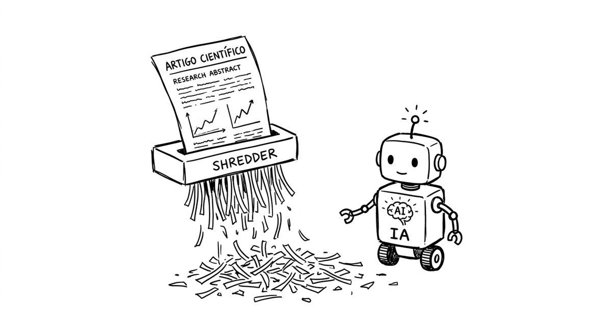

Comunicação Científica IA-IA: O artigo científico tornou-se obsoleto?
Por Lesandro Ponciano  , em 15 de abril de 2026.
, em 15 de abril de 2026.
Este texto é sobre Inteligência Artificial (IA) e comunicação científica. O foco é analisar se o uso de IA torna obsoleta a escrita de artigos científicos. Mas, para começar, vale destacar que o que torna essa discussão atrativa para muitas pessoas é o fato de ela se construir sobre "meias verdades" propagadas há muito tempo sobre artigos científicos. Algumas delas são: 1) o artigo fica na gaveta e ninguém usa; 2) ninguém lê artigo científico; 3) o cientista vive apenas de escrever artigos; e 4) artigos são confusos e ninguém entende. Sem essa visão negativa, que foi construída ao longo do tempo, talvez não se buscasse o descarte desse artefato.

Voltarei a essas meias verdades ao final, mas agora vamos colocar os agentes de IA na discussão. Recentemente, vi uma publicação em uma rede social com a seguinte argumentação: o cientista pede que a IA escreva o artigo para ele; quando publicado, outros pedem que a IA leia o artigo por eles. O argumento é que isso ocorre por que ninguém gosta de escrever artigo e ninguém gosta de ler artigo. Por essa lógica, com o uso de IA, o artigo deixaria de ser necessário, bastando haver um agente de IA entre o cientista e sua audiência. Em vez de escrever ou ler artigo, basta colocar a IA de quem fez a pesquisa para comunicar com a IA de quem tem interesse na pesquisa. Nessa visão, o texto é um artefato intermediário descartável. Vamos chamar essa abordagem especulativa de comunicação científica IA-IA.
Há algum problema em especular sobre isso? Não. É um exercício interessante. Eu me referiria a isso como uma forma moderna de e-science que pode trazer benefícios, inclusive em termos de replicabilidade e reprodutibilidade de resultados das pesquisas científicas. Onde está o problema, então? O problema reside em acreditar que o texto do artigo é um artefato desnecessário. Não é absurdo supor que esse desejo de "tirar o artigo do jogo" vá muito além do novo contexto provocado pela IA. Há muito tempo o artefato "artigo" é alvo de insatisfação.
A escrita de um artigo científico é um processo traumático para muitos pesquisadores em formação. Não se trata apenas de dominar o jargão científico ou normas como ABNT, IEEE, ACM e APA; embora estas já sejam um grande obstáculo para muitos. Para alunos de graduação que orientei, cheguei a criar uma lista de diretrizes de escrita que complementava os vários livros existentes sobre o assunto, como o clássico Writing for Computer Science. Para além disso, o desafio principal é a dificuldade que muitos têm em descrever, de forma sintética, clara e metodologicamente completa, o que fizeram, por que fizeram, o que descobriram e quais são as implicações disso. O resumo é: escrever artigo requer muito empenho e esforço, para muitos isso é razão para insatisfação, insatisfação é sinal de que algo está errado e que, portanto, precisa ser substituído.
Ao processo traumático, somam-se as tais meias verdades: a ideia de que os artigos não servem para nada, que são confusos, que ninguém lê, que escrevê-lo não é "fazer ciência" e não é "colocar a mão na massa". Esse é o caldo perfeito para a ideia de remover o que "não agrada" ou que causa "alguma instatisfação". Quando falam que artigos são confusos muitas vezes é porque se muitas vezes confudem comunicação científica com divulgação científica. Esquecem que artigos, como uma comunicação científica, são escritos para serem lidos por pessoas com conhecimento elevado sobre o assunto e não por leigos. Mesmo os bons artigos têm consigo certa complexidade e é preciso se elevar para compreendê-lo. Quando se deseja algo de alto nível, superficial ou simplificado, deve-se procurar uma divulgação científica que é voltada para leigos. Ao longo dos meus anos em pesquisa, li centenas de artigos. Há muitos ruins e é verdade que eles parecem estar cada vez em maior quantidade, provavelmente pelo paradigma que se desenvolveu de que quanto mais publicar melhor, o chamado publique ou morra (publish or perish). Mas também há muitos artigos excelentes. Alguns artigos que li são tão bons que figuram na minha lista de destaques. Então, artigos bons são lidos e compreendidos por especialistas, não ficam na gaveta, pois reportam descobertas cruciais. Não podemos cometer o erro da generalização dos casos ruins.
Uma observação é que a comunicação científica IA-IA aqui referida é muito mais avançada do que a prática atual. Atualmente, o que se tem é que cientistas usam IA para ajudá-los a escrever e a ler artigos. Essa prática também pode ser danosa, a depender da intensidade com que é praticada e do nível de responsabilidade empregado. Não vejo o artigo como um fim em si mesmo. Ele é parte de um processo. Não escrevê-lo ou não lê-lo (seja porque a IA escreve, ou porque a IA assume o papel do cientista) pode afetar todo o processo.
Meu ponto neste texto não é defender o artigo como artefato. Meu argumento principal é defender a escrita do artigo como um instrumento de raciocínio. Escrever força o poder de síntese e a clareza das ideias. Requer esforço, dá muito trabalho, mas pensar e conceber coisas requer esforço e trabalho. Para ser claro nos conceitos e métodos de um trabalho, por exemplo, precisei me debruçar por semanas sobre teorias de "engajamento", "aspectos humanos", “credibilidade” e "ação climática". Se eu permanecesse apenas no campo operacional, sem me dedicar à concepção e à teoria por trás desses termos, minha compreensão dos fenômenos seria limitada. Minha capacidade de pensar sobre eles também seria limitada. Há ideias e conceitos mal concebidos que não sobrevivem ao serem escritos no papel. E não custa reforçar que, em ciência, escrever o artigo não é todo o processo de pesquisa: sem o exercício do método científico que culminou em uma descoberta, não se tem sequer o que escrever.
É possível que, para a "comunicação científica IA-IA", sejam construídas outras ferramentas de raciocínio e outras formas de desenvolver a compreensão descritiva do fenômeno em estudo. Neste momento em que as IAs são cada vez mais usadas para "pensar" pelas pessoas, sou muito cético quanto a isso. É possível que, no futuro, o diálogo iterativo com IAs substitua parte da função cognitiva da escrita. Mas, neste momento, não há evidências de que esse processo preserve o mesmo nível de precisão conceitual e responsabilidade autoral.
Permita-me uma analogia histórica. Na Engenharia de Software convencional, anterior aos anos 2000, os engenheiros costumavam produzir muitos modelos, diagramas e documentação. Esses artefatos permitiam pensar profundamente sobre o software antes de desenvolvê-lo. Com o movimento dos métodos ágeis, decidiu-se reduzir drasticamente esses registros, focando no software em funcionamento. No entanto, os vanguardistas do agilismo incluíram em processos como XP diversas práticas que compensaram essa remoção, como programação em pares, testes automatizados, integração contínua e refatoração. Isso permitiu um nível de raciocínio talvez até superior ao da documentação antiga. O problema é que, décadas depois, os novos processos muitos removeram tais práticas e não adicionaram documentação, caindo em um desenvolvimento com pouquíssima reflexão e muitos problemas.
É positivo buscar uma ciência mais "ágil" e sem artefatos desnecessários, mas é preciso cuidar para que esse caminho não nos leve à escuridão. Até que tenhamos garantias de que o raciocínio crítico será preservado, é fundamental que os cientistas continuem escrevendo seus artigos. Mas disseram-me certa vez que é inútil nadar contra uma onda quando ela está no seu momento de maior força. Ainda assim, vale a pena registrar a posição. Mesmo ondas fortes encontram praias. É preciso parcimônia.
OBS.: Não conheço nenhum pesquisador que defenda explicitamente a comunicação IA-IA como substituta completa do artigo. Trata-se aqui de uma extrapolação especulativa a partir de tendências observadas em redes sociais e discursos entusiastas da IA.
Caso você tenha gostado desse texto, talvez também se interesse por:
- A conquista do universo digital pela Inteligência Artificial
- Reflexões sobre o Emprego de Inteligência Artificial em Ciência Participativa e Cidadã
- Inteligência artificial, avaliação de pesquisas e pesquisadores e panorama de pesquisas no Brasil
- A Relevância da Leitura na Era dos Vídeos, Audiobooks e Inteligência Artificial